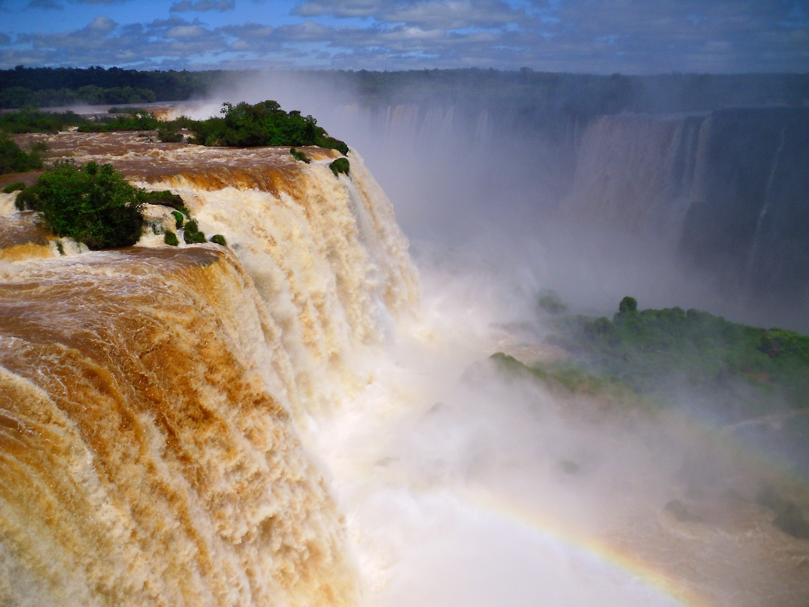
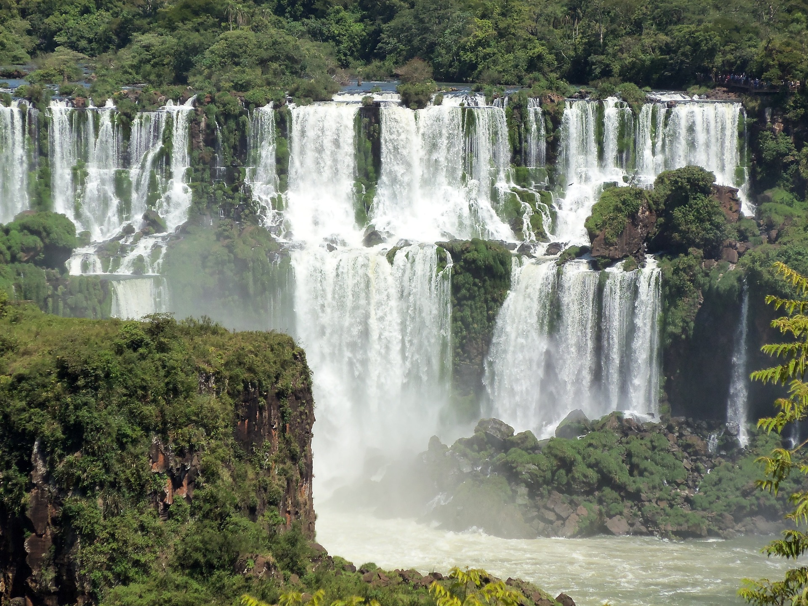
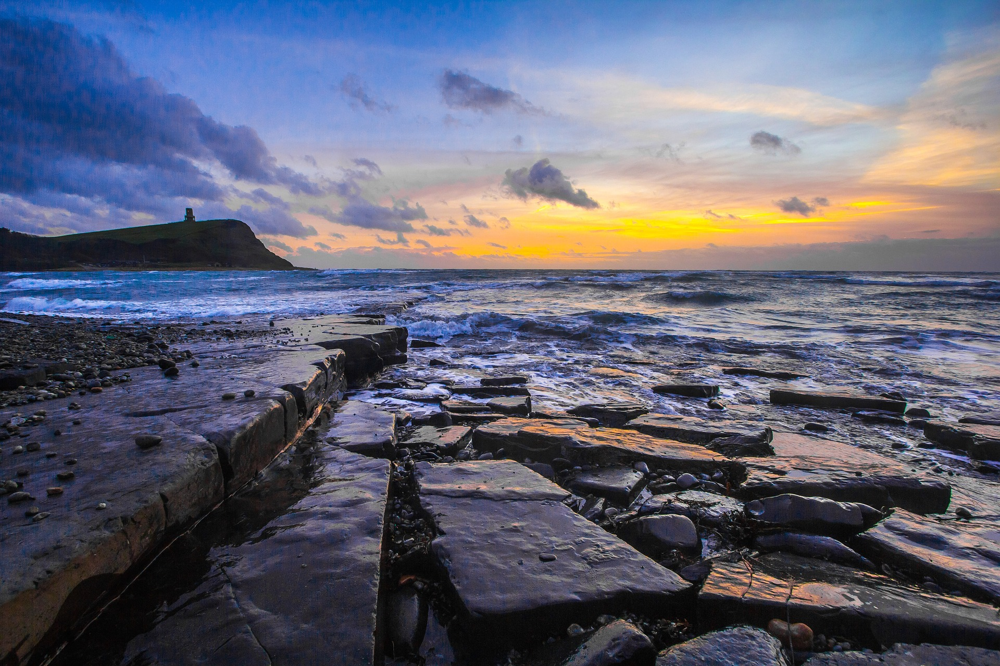
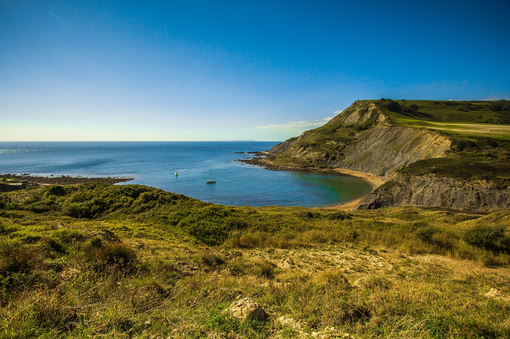

Em primeiro lugar, como uma beleza natural que se pode dizer que há uma raridade e uma pecularidade única, temos o Grand Canyon, que por conta de um acidadente geológico, surgiu uma falha na surperfície da região, possui 445 km de comprimento, aproximadamente 1,5 km de profundidade e largura entre 200 metros a 30 km. O Grand Canyon é considerado uma das sete maravilhas do mundo, o mais surpreendente é saber que essa paisagem foi esculpida de forma natural, é um ambiente que possuiu diversas cores como vermelho, ouro, rosa, verde, dentre outras. Está localizado ao norte do Estado norte-americano do Arizona e recebe inúmeros turistas de diversas partes do mundo.
.jpg "Grand Canyon") Após 1919, o Grand Canyon foi designado um parque nacional, o que o tornou ainda mais conhecido não só pelos os estadunidenses, mas por todo o mundo. Por razão de sua altitude o clima é bastante variado, as temperaturas chegam de 38°C no verão a -18°C no inverno. Uma outra curiosidade é a existência de muitos mirantes onde se pode admirar a vista, além disso, existem outras maneiras de desfrutar este ambiente, como trilhas, passeios de helicóptero, entre outros, sem dúvidas o Grand Canyon é um lugar único, cheio de beleza, aventuras, riquezas naturais e de se admirar, com toda certeza por sua diversidade, beleza, raridade e por ser um lugar único, vale muito a pena conhecer.
Após 1919, o Grand Canyon foi designado um parque nacional, o que o tornou ainda mais conhecido não só pelos os estadunidenses, mas por todo o mundo. Por razão de sua altitude o clima é bastante variado, as temperaturas chegam de 38°C no verão a -18°C no inverno. Uma outra curiosidade é a existência de muitos mirantes onde se pode admirar a vista, além disso, existem outras maneiras de desfrutar este ambiente, como trilhas, passeios de helicóptero, entre outros, sem dúvidas o Grand Canyon é um lugar único, cheio de beleza, aventuras, riquezas naturais e de se admirar, com toda certeza por sua diversidade, beleza, raridade e por ser um lugar único, vale muito a pena conhecer.
Localizada na fronteira entre o Brasil e Argentina, as Cataratas do Iguaçu são um conjunro de 275 quedas d´água, também considerada uma das sete maravilhas do mundo, uma curiosidade é que o seu nome "Iguaçu" é derivado do tupi-guarani, e seguinifica "água grande", a altura das quedas d´água variam entre 60 a 82 metros, as Cataratas do Iguaçu se formam sobre uma estrutura de rochas balsálticas, também sendo um episódio de vulcanismo ocorrido a milhares de anos atrás. O turismo é uma das principais atividades que ocorrem nessa região, são milhões de visitantes anualmente , o que gera também uma valorização econômica para esse município. Os turistas podem realizar diversas coisas como trilhas, passeios com guias, conhecer as florestas, passarelas, passeios de barcos, entre diversas outras aventuras. 
 Ás Cataratas do Iguaçu é um patrimônio cultural da UNESCO, grande é sua importância tanto histórica ou cultural, existe uma variedade natural nesse ambiente, afinal de contas, além das cataratas que são o destaque desse lugar, existe uma diversidade de animais, plantas e lugares exóticos desse ambiente, atualmente existem várias companhias de turismo que permitem chegar ás cataratas de maneira e por trilhas diferenciadas o que permite a exploração por diferente rotas, essa maravilha natural é uma das mais conhecidas ao redor do mundo. Imagina conhecer esse lugar de perto? Deve ser algo mágico e inesquecível, é certo que aqueles que vão não se arrependem de sua escolha, afinal de contas quem não gostaria de conhecer uma das ou ás sete maravilhas do mundo.
A Costa Jurássica se localiza na Inglaterra e erevelam informações sobre o passado, provavelmente você já ouviu falar que há milhões de anos atrás os continentes não estavam nas localizações atuais, tudo que havia um supercontinente chamado Pangeia, devido a um acontecimento os continentes se separarm ao longo do tempo, até a formação que conhecemos atualmente, mas algo existia antes dessa sepração, a ilha Grã Bretenha por exemplo, estava localizada próxima à linha do Equador, sabe por que é possível identificar isso? Porque à descorta de fósseis de animais e plantas localizadas no litoral da região. Diariamente recebe centenas de visitas, que ficam impressionados com a beleza desse lugar, além disso é possível que um simples visitante encontre um fóssel que conte uma história de milhões de anos, é absolutamente formidável como algo natural pode ser tão belo e carregar consigo tanta história. 
 Existem diversas opções de passeios nessa costa litorânea, para todas ás idades, existe um aquário que voc~e pode ver as lasgaostas gigantescas, há também uma bela vila de pescadores. Além disso, em algumas áreas são possíveis que seja feito uma "caça aos fósseis", a Costa Jurássica atualmente é patrimônio da humanidade pela UNESCO na Inglaterra, também se encontre dentre ás maravilhas do mundo natural, algo interessante é que apesar do nome fazer referência a um período geológico conhecido, há rochas dos períodos triássico, jurássico e cretáceo nesse local, com certeza existem dois fatores que podemos dizer que mais fazem com que esse local se torne magnífico, o primeiro deles é sua beleza, uma imensidão natural belíssima, sem dúvidas esse é um fator que faz este lugar se tornar tão único, o segundo é a história que ele carrega, é possível se sentir de volta ao passado com sua magnítude e referências ao passado, totalmente chocantes.
𖤂